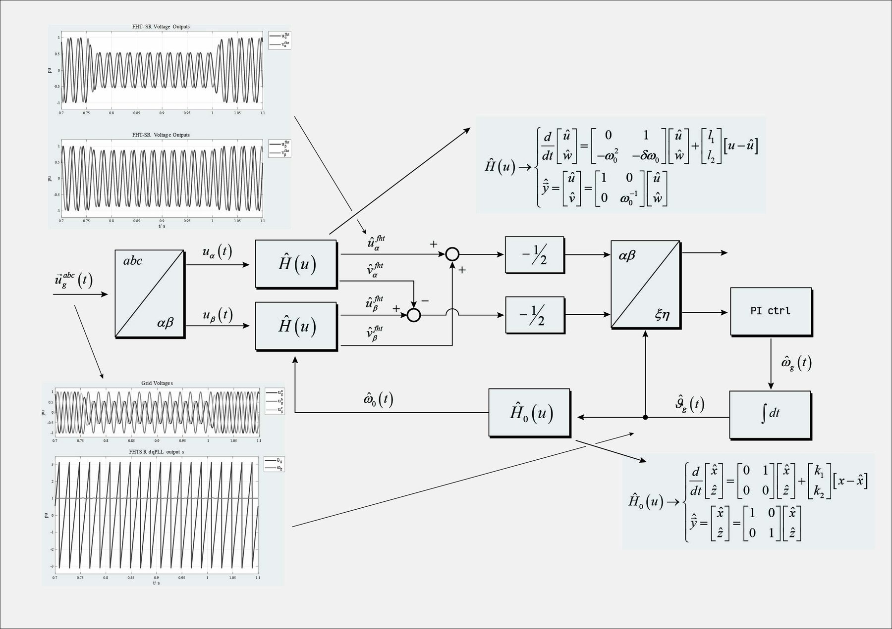

First-harmonic-tracker dq-PLL
Single-phase grid synchronisation with a first-harmonic-tracker observer as adaptive-filter VCO, and a discrete-time comparison of resonant PI, SOGI, phase-shift filter and DDSRF-PLL structures.

What it is
A three-phase PLL has the quadrature component for free; a single-phase one has to build it. The first-harmonic tracker (FHT) is a resonant state observer that tracks the fundamental of a signal and delivers its in-phase and quadrature components at the same time, so a standard dq-PLL can be closed around it. Because the observer's resonant frequency follows the PLL frequency, it works as an adaptive filter and the synchronisation stays clean on distorted grid voltages.
The structure is used by the single-phase AFE and by the SST inverters on this site, and the same observer serves as the harmonic tracker in the current controllers.
Design and comparison
Discrete-time design of resonant PI, SOGI, phase-shift filter, DDSRF-PLL and FHT observers for 50 Hz and 400 Hz signals, with their frequency responses and step responses side by side.
The technical note derives the observer and the PLL and shows the simulation results; the video shows the lock-in on a distorted single-phase voltage.
Video
 FHT dq-PLL simulationLock-in on a distorted single-phase voltage · YouTube
FHT dq-PLL simulationLock-in on a distorted single-phase voltage · YouTube